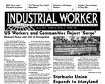

Submitted on Sat, 03/31/2007 - 3:03pm
 Dear friends and fellow workers,
Dear friends and fellow workers,
We recently have been informed that a fellow worker of ours from the cafeteria in the basement of the business school, James Kirk, has sadly passed away Friday afternoon. Aswould be expected, a lot of the workers are absolutely shocked at the news of his passing. We took it upon ourselves to inform you all about the news, as I know that most of us (at least laptop support) go down on our 15 minute breaks to get a bite to eat, some snacks, or even a hot meal from the kitchen. But it's not just the workers who get their food prepared by these workers every day, it's students as well.
We are planning to host a candle lit vigil on the M in the diag (in front of the Grad Library and shapiro) and have a moment of silence for James sometime this week which would include all of the Ross Business school employees and also the students organizing in the temps campaign to show appreciation for his work here at the University. This is an issue near and dear to us, not only because James was a fellow worker, but because James might have been able to receive a proper diagnosis and treatment for his condition had he been given access to UHS; a struggle closely tied to the temps campaign.
If you are interested in attending or have any other ideas of ways to have a remembrance for our fellow worker and friend go ahead and let us know. You can call an IWW organizer at (734) 272-2321.
This is a very sad time for all of us, so I believe staying together and staying strong is a rather important for us at this time. We will keep everyone posted.
Rest In Peace
The Temps
Submitted on Sat, 03/24/2007 - 10:25pm

Headlines:
- US Workers and Communities Reject 'Surge': Demand Peace and End to Occupation
- Starbucks Union Expands to Maryland
- Scotland IWWs Fight to Save Crichton Campus
Featured Articles:
- Eric Lee - Google Ads and Wikipedia are a new battleground for union campaigns
- Solidarity with Iranian Workers
- New Fiction - Tightline Johnson returns and joins the Starbucks Union
Download a free PDF copy of this issue.
Find out how you can support the Industrial Worker.
Submitted on Sat, 03/24/2007 - 5:52pm
El Consejo General Ejecutivo del IWW dio su apoyo al segundo "Gran Paro Americano", día de huelga general y de acción por los derechos de los inmigrantes en los EEUU que tendrá lugar el 1 de mayo, Día Internacional del Trabajo.
El ímpetu crece y los organizadores esperan igualar o sobrepasar el exitoso "paro" del 2006. El IWW respaldó el primer Gran Paro Americano y muchos miembros participaron en marchas, acciones en el trabajo y otras actividades respondiendo al llamado.
Los oficiales del IWW alientan a los miembros, sucursales y aliados a involucrarse en este importante movimiento y demostrar nuestra solidaridad con los millones de inmigrantes que hoy día sufren ataques en tantos frentes. Para más información ver www.mayday2007.org
Submitted on Sat, 03/24/2007 - 4:40pm
By the Madison, WI General Membership Branch of the IWW
 Bosses wage war to make money and workers are the ones who die in the process.
Bosses wage war to make money and workers are the ones who die in the process.
This fact should be obvious to most people. Yet many workers – along with their supposed unions – end up stoking the engines of an infernal war machine.
While many may secretly question the sanity of a capitalist system that sacrifices them and their children as cannon fodder on the altar of corporate profit, few are willing to challenge the power system behind such relentless warmongering.
It is indeed hard to tell when one war ends and another begins, when the current military industrial complex feeds itself, churning out fresh excuses and victims on a regular basis. The earlier “War to End All Wars” ends up leading to the latest “War on Terror.”
Of course, one’s notion of “terrorism” depends upon who is dropping bombs on whom. Guernica, Hiroshima, My Lai, Fallujah – all now serve as painful reminders of the bloodletting capacity of ruling elites to kill innocent people for their own short term self interest.
Why would working class folks want to go along with any of this?
Granted, there are those directly caught up in the military industrial complex who have few choices left. Soldiers, whether conscripted or recruited, find themselves in a “dog eat dog” world. Factory workers or university researchers may think the only way to butter their bread is to work for the Pentagon. Like selling slaves or harpooning whales, it can be hard to give up a “good” paying job, making anthrax or throwing grenades.
That elites could care less about workers is even more apparent when the latest warfare binge is used to curtail existing labor rights and bust more unions. Soldiers that survive the horror of war to return home still end up treated just like any other throwaway temp worker – dumped on society’s curb and left to fend for themselves. Are exploited Iraqi workers or crippled Afghani veterans really any different from those in the U.S.?
Thankfully, there have always been those who could not sleep with the complicity their work entailed and chose to take direct action instead. Roman gladiators joined slave revolts. Catholic missionaries supported indigenous rebels. French trade unionists sabotaged ordinance in solidarity with Algerian revolutionaries. U.S. sailors sank their own ships to make sure they didn’t reach the shores of Vietnam.
History is replete with examples of regular working class people who have successfully resisted the forces of militarism. Once you realize that the root cause of violence is often exploitation, it is much easier to identify the enemy that is at hand.
Better yet, there are those who go beyond challenging the status quo and are now actively building a new world from the ashes of the old. Destructive activities – like making bombs and dropping them – do not create a hopeful and prosperous future for anyone. Solidarity, mutual aid, common good, cooperation – those are the values around which one builds a better peaceful world. Economic conversion, though, requires cultural transformation. Can we learn nonviolent conflict resolution and ignore the orders to fight each other instead?
One labor union that has always opposed war, and still does, is the Industrial Workers of the World (IWW). Founded in 1905 in Chicago, many early IWW leaders were tossed in prison or deported for daring to ask why bosses were sending workers to kill each other in the trenches of WW1. Today, members of the IWW are still speaking truth to power - refusing to pay war taxes, joining counter recruiting efforts, supporting liberation struggles against imperialism, and otherwise seeking to halt the military industrial juggernaut in its tracks.
Submitted on Thu, 03/22/2007 - 2:39pm
 NBC King 5 video here of the protest and interview with Bean 2 Cup Campaigner Peter Van Schaick.
NBC King 5 video here of the protest and interview with Bean 2 Cup Campaigner Peter Van Schaick.
ABC KOMO-TV piece here: "Some Starbucks workers have aligned with the International [sic] Workers of the World to press for changes in Starbucks' policies. Schultz dismissed the efforts of 'fringe unions,'..."
Seattle Times piece here cites the protest and quotes a Starbucks investor in need of reading the 2006 Starbucks Corporate Irresponsibility Report: "Georgia McCollum, an investor from Gig Harbor, said when she heard there would be protests around the annual meeting this year — the Industrial Workers of the World helped lead a small rally for workers' rights outside McCaw Hall — "I couldn't think of one thing to protest."